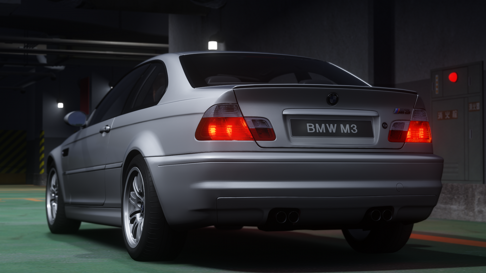
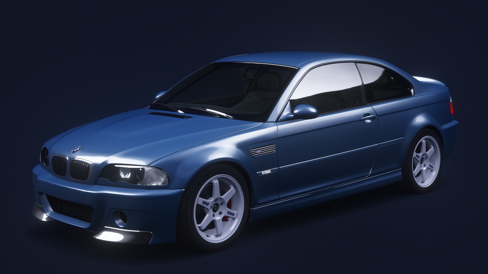
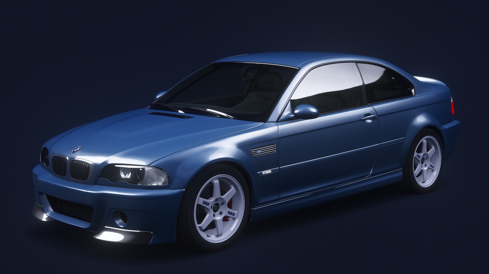
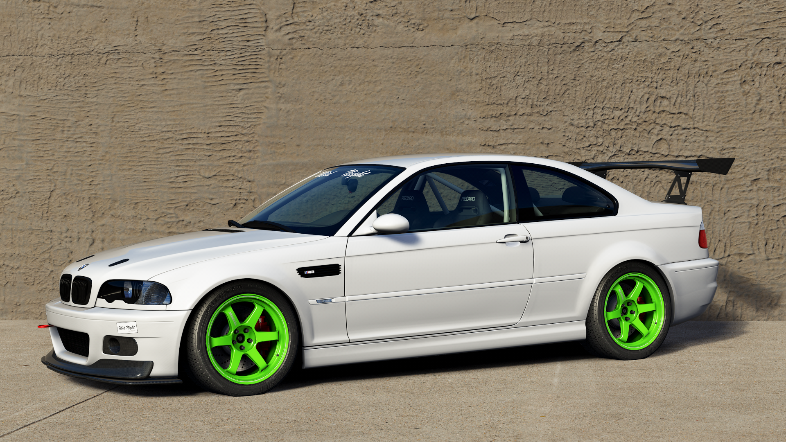
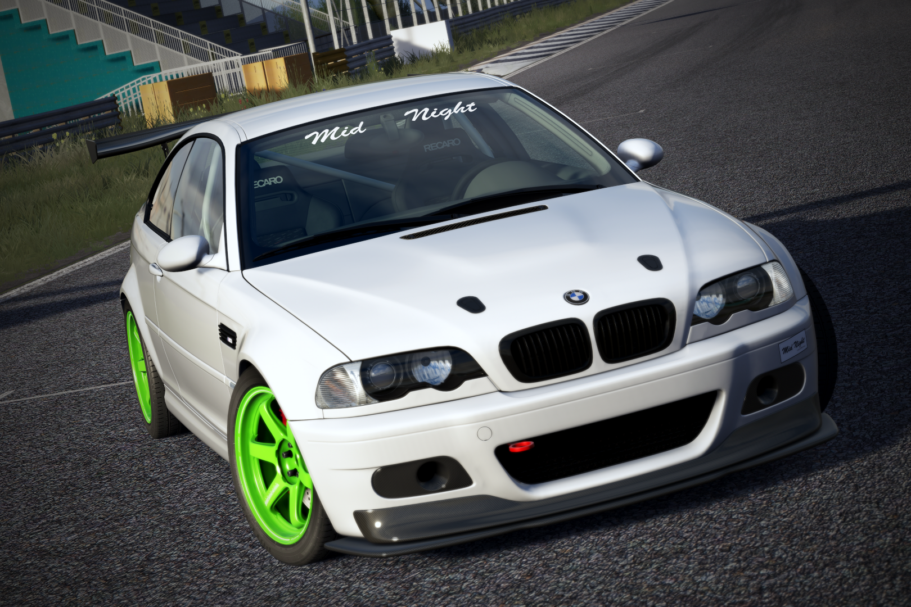

A 2003 BMW M3 Coupe converted from Gran Turismo 7 to Assetto Corsa in a variety of specifications.
I'd say this is 90% done. Visually it looks mostly fine, but these have an unnecessarily high object count. Optimization for better performance is needed.
Mostly 1x subdivided, with 2x in certain places.
Stock base model M3. Sits on 18-inch 225/255 wheels. 6-speed manual.
Physics by Arch (@archtarded on Discord). Tends to understeer, but fun to drive when you adjust your driving style to it. Easy to drive, suitable for beginners.

Basic performance upgrades. 235/255 18" wheels (Rays CE28 or TE37) on modern sport tyres. H&R lowering springs, custom exhaust and tuned engine for a slight power bump. Cosmetic mods on exterior - trunk lip spoiler, CSL front bumper, CSL carbon exhaust cover thing.
 

Track-oriented mods. Very stiff Bilstein coilovers, square 275 R18 wheels (Rays TE37 Ultra), Varis foglight air ducts, front diffuser and rear aero wing, Big brake kit, Recaro SR3 seats. Tuned S54 engine.
  Get me outta here!
Get me outta here!